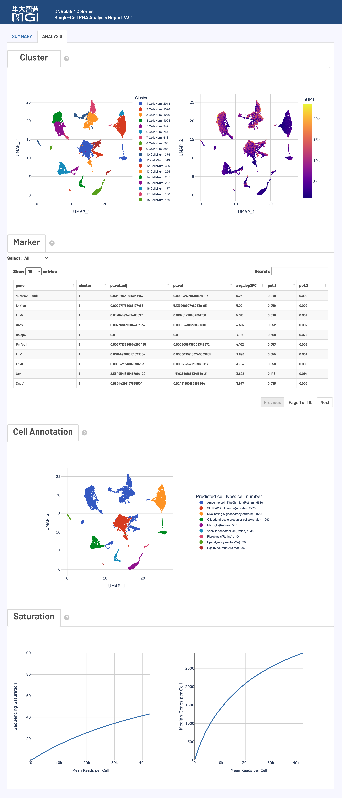

scRNA 分析输出¶
输出范围：目录树描述常规完成运行的结果；可选文件取决于启用模块与阶段完成状态。下文质量参考区间是判读建议，不是软件内置的通过/失败规则，应以本次配置阈值和报告状态为准。
单细胞 RNA 测序分析输出文件说明
概述 ¶
单细胞 RNA 分析完成后，会在指定的输出目录中生成标准化的文件和子目录结构，用于基因表达谱定量、细胞分群与细胞类型鉴定。矩阵与注释文件可按相应格式导入 Scanpy、Seurat 等工具；读取示例参见结果分析。
核心交付物速览¶
下表汇总了 scRNA 分析的主要产物、文件格式、核心用途以及推荐的下游生态对接：
| 交付产物与核心文件 | 格式 | 主要用途与下游生态对接 |
|---|---|---|
| 基因表达定量矩阵 • filtered_feature_bc_matrix/• filtered_feature_bc_matrix.h5• filtered_feature_bc_matrix.h5ad |
MEXH5H5AD |
真实单细胞的高置信度基因表达矩阵，下游分析的核心输入。 • R (Seurat): Read10X() / Read10X_h5()• Python (Scanpy): read_h5ad() / read_10x_h5() / read_10x_mtx() |
| 未过滤原始矩阵 • raw_feature_bc_matrix/• raw_feature_bc_matrix.h5 |
MEXH5 |
包含全量候选微珠/液滴与背景噪音的原始计数矩阵，用于自定义空滴模型（EmptyDrops）与质控复核。 |
| 聚类与分群分析 • analysis/QC_Cluster.h5ad• analysis/cluster.csv• analysis/marker.csv |
H5ADCSV |
封装降维坐标（UMAP/t-SNE）、图聚类分群标签及各群差异表达 Marker 基因列表。 • 推荐工具: Scanpy / 统计分析与可视化绘图 |
| 细胞元数据明细 • singlecell.csv |
CSV |
记录每个液滴/微珠的测序读段数、基因数、UMI 分子数及真实细胞识别标记。 • 分析注意: 统一按 is_cell_barcode 筛选真细胞；作为 VDJ 联动白名单输入。 |
| 实验指标汇总 • metrics_summary.xls |
TSV 文本 |
测序质量、比对率、细胞数及 UMI 中位数等全局生信统计指标。 • 读取规范: 制表符文本，R 用 read.delim()，Python 用 pd.read_csv(sep='\t')。 |
| 交互式网页报告 • <sample>_scRNA_report.html |
HTML |
一站式可视化质控与分析报告，交互式查看细胞鉴定曲线、数据质控指标与聚类分群图。 • 打开方式: 无需网络，双击在任意现代桌面浏览器中直接打开。 |
| 基因组比对记录 • anno_decon_sorted.bam• anno_decon_sorted.bam.bai (或 .csi) |
BAMBAI / CSI |
携带纠错单细胞标签（CB, UB, GN）的基因组坐标排序比对文件。• 生态对接: 支持 IGV 可视化、samtools 检索、RNA 速率（Velocyto）分析。 |
| 双物种归属（可选） • analysis/cell_classification.csv |
CSV |
区分人鼠等双物种混合样本的细胞物种归属与多胞率（Multiplet）。 • 生成条件: 仅在多物种混合参考基因组分析时生成。 |
输出目录结构 ¶
outs/
├── filtered_feature_bc_matrix/ # 过滤后的高置信度基因表达矩阵目录 (MEX 格式)
│ ├── barcodes.tsv.gz # 真实细胞 ID 列表
│ ├── features.tsv.gz # 基因 ID、名称与类型
│ └── matrix.mtx.gz # 稀疏表达计数矩阵
├── filtered_feature_bc_matrix.h5 # 过滤后的基因表达矩阵 (单文件 HDF5 格式，Seurat 首选)
├── filtered_feature_bc_matrix.h5ad # 过滤后的基因表达矩阵 (AnnData 格式，Scanpy 首选)
├── raw_feature_bc_matrix/ # 未过滤的原始基因表达矩阵目录 (MEX 格式，含全量液滴)
│ ├── barcodes.tsv.gz
│ ├── features.tsv.gz
│ └── matrix.mtx.gz
├── raw_feature_bc_matrix.h5 # 未过滤的原始基因表达矩阵 (单文件 HDF5 格式)
├── analysis/ # 下游聚类分析与 Marker 基因结果
│ ├── QC_Cluster.h5ad # 封装了质控、降维、聚类与 Marker 的完整 AnnData 对象
│ ├── cluster.csv # 各细胞所属聚类及 UMAP 坐标
│ ├── marker.csv # 各聚类差异高表达 Marker 基因列表
│ └── cell_classification.csv # 双物种细胞归属与多胞判定（仅双物种分析时生成）
├── singlecell.csv # 细胞与液滴级别质控明细表（含真实细胞识别标记）
├── metrics_summary.xls # 实验质控与分析质量指标汇总表（制表符分隔 TSV）
├── <sample>_scRNA_report.html # 交互式综合网页质控与分析报告
├── anno_decon_sorted.bam # 坐标排序的比对 BAM 文件（启用 BAM 时输出）
├── anno_decon_sorted.bam.bai # 比对索引文件（超长染色体自动生成 .csi）
└── oligo.records.bam # Oligo 文库比对记录（启用 BAM 且含有 Oligo 文库时输出）
版本交付说明
filtered_feature_bc_matrix.h5ad 保存过滤计数矩阵。BAM 索引可根据染色体长度自动选择 BAI 或 CSI；使用 --no_bam 时会同时跳过 cDNA 和 oligo BAM 生成以减少 BAM 文件占用的磁盘空间。基于 Sample Barcode 物理混合的 C6 多样本输出结构请参阅 C6 多样本输出。
详细文件说明 ¶
1. 特征与表达矩阵文件 ¶
核心内容: 单细胞基因表达计数矩阵，分为过滤后的高质量细胞数据和原始全量液滴数据，同步提供 MEX、H5 与 H5AD 三种主流格式。
微珠合并与细胞标识追溯
DNBelab C 系列一个物理液滴可能包含多个微珠。算法自动合并共有微珠并命名为 CELL<number>_N<bead_count>（如 CELL1118_N3，单微珠为 _N1）。交付的 BAM 中 CB 标签与表达矩阵的 barcodes.tsv.gz 均为合并后的最终细胞 ID；singlecell.csv 中保留分号分隔的原始微珠序列。
过滤后的基因表达矩阵 (filtered_feature_bc_matrix/) ¶
包含通过细胞质控与 EmptyDrops 模型鉴定的真实单细胞表达计数矩阵，是进行下游聚类分群、差异表达和细胞类型注释的主要核心输入。
采用标准的 Matrix Market Exchange (MEX) 稀疏格式存储，包含以下三个配套文件：
| 文件名 | 格式 | 内容描述与对应关系 |
|---|---|---|
matrix.mtx.gz |
MatrixMarket 文本（gzip 压缩） | 稀疏表达矩阵。包含矩阵行数、列数、非零元总数，后续每行记录一个非零元素的位置与计数值（行号 列号 表达量数值）。仅存储非零元素，大幅节约存储。 |
barcodes.tsv.gz |
单列纯文本（gzip 压缩） | 通过质控筛选的高质量真实细胞 ID 列表（格式如 CELL1_N2），行号严格对应矩阵的列索引。 |
features.tsv.gz |
三列制表符文本（gzip 压缩） | 特征（基因）注释表，包含 基因ID、基因名称 和 特征类型（Gene Expression），行号严格对应矩阵的行索引。 |
- 快速加载示例：
- R (Seurat):
library(Seurat) counts <- Read10X(data.dir = "filtered_feature_bc_matrix") seu <- CreateSeuratObject(counts = counts) - Python (Scanpy):
import scanpy as sc adata = sc.read_10x_mtx("filtered_feature_bc_matrix", var_names="gene_symbols")
单文件 HDF5 表达矩阵 (filtered_feature_bc_matrix.h5)¶
将上述稀疏矩阵、细胞条形码和特征基因整合封装于单一 HDF5 二进制文件中。 - 推荐场景：R（Seurat）与 Python（Scanpy）跨平台快速单文件加载。 - 快速加载示例： - R (Seurat):
library(Seurat)
counts <- Read10X_h5("filtered_feature_bc_matrix.h5")
seu <- CreateSeuratObject(counts = counts)
import scanpy as sc
adata = sc.read_10x_h5("filtered_feature_bc_matrix.h5")
AnnData 表达矩阵 (filtered_feature_bc_matrix.h5ad) ¶
专为 Python 单细胞生态定制的 AnnData 二进制格式，完整存储稀疏矩阵 X、细胞元数据 obs 与基因元数据 var。
- 推荐场景：Python（Scanpy / scvi-tools）生态的首选格式。
- 快速加载示例：
import scanpy as sc
adata = sc.read_h5ad("filtered_feature_bc_matrix.h5ad")
AnnData 内部核心插槽（Slots）结构如下：
| 组件 | 实际保存内容 |
|---|---|
X |
下游质控与归一化前的细胞×基因原始计数（n_cells × n_genes） |
obs |
细胞/条形码标识；此计数导出不保证包含下游质控或注释字段 |
var |
输入矩阵提供的基因信息，如 gene_ids、feature_types |
filtered_feature_bc_matrix.h5ad 是计数矩阵，不是聚类对象。PCA/UMAP 坐标、聚类标签和 Marker 统计保存在 analysis/QC_Cluster.h5ad 中，具体内容取决于相应分析阶段是否完成。本流程不生成剪接/未剪接计数层。
未过滤原始表达矩阵 (raw_feature_bc_matrix/ 与 .h5)¶
包含测序检测到的全量条形码（未经过滤）的原始基因表达计数矩阵。 - 核心用途：保留包含真实细胞、低质量受损细胞以及背景游离液滴在内的全量数据；适用于用户需要复核细胞鉴定曲线（Barcode Rank Plot）、运行自定义过滤模型或手动设置阈值的场景。
2. 分析与聚类结果目录 (analysis/) ¶
核心内容: 流程自动化执行的降维（PCA/UMAP）、图聚类、差异高表达 Marker 基因以及双物种判定结果。
QC_Cluster.h5ad¶
经过完整标准化、高变基因筛选、PCA 降维、邻近图构建、Leiden/Louvain 聚类及 UMAP 投影的完整单细胞数据对象。
- 核心用途：整合了上游表达矩阵与全部下游生信分析结果。直接在 Python 中加载即可复现分析报告中的全部聚类分群图与 Marker 分析，无需重新运行耗时的降维和聚类流程。
- 包含组件：
- adata.obs['leiden']: 细胞的聚类簇编号；
- adata.obsm['X_umap']: UMAP 二维投影坐标；
- adata.uns['rank_genes_groups']: 各聚类的差异表达基因统计结果。
QC_Cluster.h5ad 的字段取决于已完成的分析步骤；小样本或空结果可能只有空 Marker 表或简化分析结果。输出根目录的计数矩阵与此经过下游处理的分析对象不同。
cluster.csv¶
以表格形式导出的细胞聚类分析明细表（CSV 格式）。
- 字段说明：
- CSV 首列（行索引）：细胞 ID，列名不保证为 Barcode；
- leiden：聚类簇编号；Cluster：包含簇内细胞数的展示标签；
- UMAP_1, UMAP_2: UMAP 降维的二维散点坐标；
- nGene, nUMI: 每个细胞检测到的基因数和 UMI 总数。
marker.csv¶
各细胞聚类的差异高表达基因（Marker 基因）列表（CSV 格式），用于指导细胞类型鉴定和功能富集分析。
- 字段说明：
- cluster: 目标聚类簇编号；
- gene: 基因符号（Gene Symbol）；
- avg_log2FC: 该基因在目标聚类相比其他聚类的平均对数倍数变化（Fold Change）；
- p_val_adj: Scanpy rank_genes_groups 返回的多重检验校正 p 值；
- pct.1: 该基因在目标聚类细胞中的表达比例；
- pct.2: 该基因在其余所有聚类细胞中的表达比例。
marker.csv 保留 log fold change 非空、avg_log2FC > 0 且 p_val_adj < 0.05 的基因，按 log fold change 排序，每簇最多保留 50 个。空表不一定表示文件导出失败。
cell_classification.csv（仅双物种分析时生成）¶
在执行双物种（如人-鼠混合 hg38 + mm10）分析时生成，记录每个细胞的物种归属判定。
- 字段说明：
- barcode: 细胞 ID；
- <species1>（如 hg38）: 比对到第一物种基因组的 UMI 计数；
- <species2>（如 mm10）: 比对到第二物种基因组的 UMI 计数；
- call: 物种归属判定结果（hg38、mm10 、混合候选 Multiplet 或未确定归属 Unassigned）。Multiplet 是跨物种混合候选，不等于已证实的生物学双胞。
数据示例：
barcode,hg38,mm10,call
CELL1_N2,17098,821,hg38
CELL2_N8,56978,1939,hg38
CELL5_N2,868,4216,mm10
CELL8_N2,2371,71601,mm10
CELL27_N3,64247,90800,Multiplet
3. 分析指标与细胞明细汇总 ¶
核心内容: 实验整体质量评估汇总、单细胞级别质控明细以及交互式 HTML 综合报告。
*_scRNA_report.html¶
一站式交互式综合网页报告。 - 核心用途：可在任意标准浏览器中直接离线打开，直观查看细胞鉴定曲线（Barcode Rank Plot）、聚类 UMAP 图、高表达 Marker 热图及各项测序与比对生信指标。详细图表判读请参阅下文 网页报告释义。
metrics_summary.xls¶
实验关键分析质量指标汇总表。虽然扩展名为 .xls，其实质为标准的制表符分隔纯文本（TSV）。
- 核心用途：汇总测序质量、比对率、细胞数、每细胞平均 Reads 数及中位基因/UMI 表达量等全局生信统计指标。
- 加载规范：R 中使用 read.delim("metrics_summary.xls", check.names = FALSE)；Python 中使用 pd.read_csv("metrics_summary.xls", sep="\t")。
singlecell.csv¶
单细胞级别的全量质量控制信息表（CSV 格式）。
- 核心用途：记录测序下机检测到的每个微珠/液滴的详细指标，支持用户进行自定义深度过滤，并作为 V(D)J 免疫组库分析的核心输入白名单（通过 --beadstrans 传入）。
- 关键字段：
- cell: 聚合后的细胞 ID（如 CELL1_N2）；
- barcode: 原始测序微珠条形码（若由多微珠合并，各条形码以分号 ; 分隔）；
- reads: 该微珠/液滴对应的转录组 Read 数；
- gene: 检测到的基因种类数；
- umi: 检测到的转录本 UMI 总分子数；
- is_cell_barcode: 真实细胞识别标记（1 或 True 表示判定为有效细胞；0 或 False 为背景；未匹配到合并细胞的记录可有空的 cell 和标记）。
4. 基因组比对与注释文件 ¶
核心内容: 测序读段比对到参考基因组的坐标排序 BAM 文件及索引，携带丰富的单细胞与基因注释 TAG 标签。
anno_decon_sorted.bam¶
经过坐标排序的比对结果文件（Binary Alignment Map 格式）。
- 核心用途：载入 IGV 等基因组浏览器查看目标基因座位的比对深度与剪接模式；作为单细胞变异检测、可变剪接和 RNA 速率（Velocyto）等高阶分析的输入文件。
- 跳过生成：BAM 文件体积较大，若仅需表达矩阵进行常规单细胞分群，可在运行命令中添加 --no_bam 跳过生成，可节约约 70% 的磁盘空间。
关键 TAG 字段说明：
BAM 文件通过标准 TAG 记录了单细胞核心元数据与注释：
| 标签 | 类型 | 含义与功能 |
|---|---|---|
CB |
String | 细胞条形码合并后的统一细胞 ID（经过纠错与微珠合并的最终 ID，如 CELL1_N2，与表达矩阵列名一致） |
CC |
String | 经过错误校正的原始细胞条形码序列 |
CR |
String | 测序仪下机报告的原始测序细胞条形码序列 |
CY |
String | 细胞条形码的 Phred 测序质量得分 |
UB |
String | 处理后的 UMI 序列；存在该标签不表示 BAM 中每个分子仅保留一条记录 |
UR |
String | 测序仪下机报告的原始测序 UMI 序列 |
UY |
String | UMI 的 Phred 测序质量得分 |
GX |
String | 参考注释中的基因 ID（不限于 Ensembl ID） |
GN |
String | 基因符号（Gene Name / Symbol） |
TX |
String | 比对到的转录本标识符（Transcript ID） |
AN |
String | 反义转录本标记（用于评估文库链特异性） |
RE |
Character (A) |
比对区域类型：外显子（E）、内含子（N）或基因间区（I） |
anno_decon_sorted.bam.bai (或 .csi)¶
BAM 文件的索引文件，支持基因组区间的毫秒级快速随机访问。
- 自适应索引规则：
- 参考序列最大染色体长度 ≤ 2^29 bp（536,870,912 bp） 时生成标准的 .bai 索引；
- 当参考基因组包含超大染色体或人工重叠群（> 2^29 bp）时，SAMtools 会自动切换生成 .csi 索引。
仅含表头的零结果 RNA BAM 可不生成坐标索引。
oligo.records.bam¶
当实验启用了包含 Oligo 捕获序列的建库策略且未添加 --no_bam 时生成，记录 Oligo 读段的比对与条形码识别明细。
网页报告释义 ¶
dnbc4tools 产出的交互式 HTML 网页报告（report.html）是评估实验质量和下游分析效果的核心交互入口。报告直观呈现从测序质量、比对分布、细胞识别到下游聚类与细胞注释的全流程质控指标与可视化图表。
质量评估原则与阅读建议
- 整体到局部：建议先核对概览统计（细胞数、测序量、比对率），再深入检查小提琴图、细胞鉴定拐点曲线与聚类分布。
- 相对性判断：文中所列阈值基于常规组织与标准建库经验总结，实际质控应紧密结合组织类型（如实体瘤 vs 外周血）、细胞活性与实验设计进行综合评估。
- 指标分母：原始读段对数、有效条形码的转录组置信比对 reads、识别细胞内的分子支持 reads、各区段碱基数属于不同统计集合，应按具体指标定义读取，不能统一除以原始 reads 总数。
报告概览与主要模块¶

核心分析指标详解¶
细胞指标 (Cell Metrics) ¶
细胞指标反映细胞识别效率、整体转录本捕获深度及单细胞基因表达水平。
质量控制参考标准：
| 指标项 (Metric) | 推荐理想值 | 可接受范围 | 需排查优化 | 核心关注点 |
|---|---|---|---|---|
| Mean reads per cell | ≥ 30,000 | 15,000 – 30,000 | < 15,000 | 单细胞测序深度是否充足 |
| Median genes per cell | ≥ 1,000 | 500 – 1,000 | < 500 | 单细胞转录组复杂度与有效信息量 |
| Fraction reads in cells | ≥ 60% | 30% – 60% | < 30% | 背景游离环境 RNA 污染与细胞完整性 |
| Sequencing saturation | ≥ 40% | 20% – 40% | < 20% | 文库测序覆盖度与加深测序收益评估 |
详细指标释义与技术要求：
| 指标名称 (Metric) | 统计口径与算法计算 | 判读指导与排查要点 |
|---|---|---|
| Estimated number of cells 估计细胞数量 |
从测序数据中鉴定出的有效真实细胞总数。基于细胞条形码的 UMI 降序分布，结合 EmptyDrops 空滴算法模型智能区分细胞与背景噪音。 | 结合实际上样量与细胞活率评估。若显著低于预期，建议优先排查微流控结团/堵塞、破胞情况或测序深度不足。 |
| Species 物种信息 |
分析流程所采用的参考基因组物种标识（如 Human GRCh38 或 Mouse GRCm38）。 | 确认分析参考库与实验样本物种完全一致，是所有定量与质控判读的前提基准。 |
| Mean reads per cell 每细胞平均 Reads 数 |
原始测序读段总数 / 估计细胞数量（Number of reads / Estimated number of cells） |
建议 ≥ 30,000。偏低可能导致低表达特征基因检出不足，影响稀有亚群聚类和差异基因鉴定的灵敏度。 |
| Median/Mean UMI per cell 细胞中位/平均 UMI 数 |
判定为真实细胞的条形码内捕获到的唯一转录本分子（UMI）计数的中位数与均值。 | 反映单细胞转录本分子的绝对捕获量。受细胞体积和类型影响显著（如浆细胞、肿瘤细胞通常高于静息淋巴细胞）。 |
| Median/Mean genes per cell 细胞中位/平均基因数 |
单个真实细胞内检出基因（UMI ≥ 1）数量的中位数与均值。 | 评估单个细胞转录组的复杂度。外周血淋巴细胞等微小细胞该值通常偏低，组织原代细胞该值偏高。 |
| Total genes detected 检测到的总基因数 |
在全样本所有细胞中至少检测到 1 个有效 UMI 计数的基因总和。 | 反映样本整体转录组覆盖度与细胞群体异质性。过低可能提示测序深度不足或组织类型极度单一。 |
| Fraction reads in cells 细胞内 Reads 比例 |
有效条形码且置信比对至转录组的 reads 中，归属于识别细胞的比例；不能用 singlecell.csv 的原始 reads 直接代替该分母。 |
推荐 ≥ 60%。偏低提示细胞裂解导致游离环境 RNA（Ambient RNA）过量释放，或存在大量未包进细胞的空微珠。 |
| Sequencing saturation 测序饱和度 |
在识别细胞内，1 − 不同分子数 / 支持这些分子的 reads 数；分子按细胞条形码、基因和纠错后 UMI 区分。 | 推荐 40%–85%。反映文库测序充分性。若 < 40%，继续加测能显著增加新基因与 UMI；若 > 85%，加测收益极低。 |
测序指标 (Sequencing Metrics) ¶
测序指标反映测序仪下机数据的物理质量，包括条形码识别率、UMI 完整度及碱基测序准确性。
质量控制参考标准：
| 指标项 (Metric) | 推荐理想值 | 可接受范围 | 需排查优化 | 核心关注点 |
|---|---|---|---|---|
| Valid barcodes | ≥ 80% | 70% – 80% | < 70% | 细胞条形码匹配度，低于 70% 提示文库或测序异常 |
| Valid UMIs | ≥ 80% | 70% – 80% | < 70% | 分子标签合成质量与测序准确性 |
| Q30 Base Quality | ≥ 85% | 75% – 85% | < 75% | 测序质量值，直接影响比对与纠错置信度 |
详细指标释义与技术要求：
| 指标名称 (Metric) | 统计口径与算法计算 | 判读指导与排查要点 |
|---|---|---|
| Number of reads 测序读段总数 |
分配给该样本的双端原始测序读段（Read Pairs）总数。 | 衡量输入 cDNA 测序量，用于原始平均测序深度；其他比例指标使用各自定义的分母。 |
| Valid barcodes 有效条形码比例 |
细胞条形码（Cell Barcode）能精确匹配预设白名单或经 1-bp 容错纠错校正成功的读段比例。 | 推荐 ≥ 80%。过低通常提示条形码测序质量差、接头污染、引物合成缺陷或建库批次异常。 |
| Valid UMIs 有效 UMI 比例 |
UMI 序列不包含不确定碱基 N 且非单碱基同聚物（如 AAAAAA）的读段比例。 |
评估 UMI 分子标签能否用于可靠去重定量。若异常偏低，需检查测序第二端（或 UMI 区段）的测序质量。 |
| Q30 bases in barcode / UMI / read 各区段 Q30 碱基比例 |
条形码区、UMI 区以及 cDNA 测序读段中，Phred 质量得分 ≥ 30（错误率 < 0.1%）的碱基占比。 | 推荐 ≥ 85%。若 Read 端 Q30 偏低，可能导致转录本比对率降低；若 Barcode/UMI 端 Q30 偏低，影响细胞与分子纠错。 |
比对指标 (Mapping Metrics) ¶
比对指标评估测序 Reads 与参考基因组的比对质量，包括整体比对率、转录组置信比对率及基因组结构区域分布。
质量控制参考标准：
| 指标项 (Metric) | 推荐理想值 | 可接受范围 | 需排查优化 | 核心关注点 |
|---|---|---|---|---|
| Reads mapped to genome | ≥ 80% | 50% – 80% | < 50% | 整体比对率；过低提示参考库错误、污染或 rRNA 多重比对过多 |
| Reads mapped confidently to transcriptome | ≥ 50% | 30% – 50% | < 30% | 能够参与基因定量的核心有效读段比例 |
| Reads mapped antisense to gene | < 10% | 10% – 30% | > 30% | 反义转录本比例；过高提示建库链特异性异常 |
详细指标释义与技术要求：
| 指标名称 (Metric) | 统计口径与算法计算 | 判读指导与排查要点 |
|---|---|---|
| Reads mapped to genome 基因组比对率 |
成功比对至参考基因组的 Reads 占总 Reads 的比例（包含唯一比对与多重比对）。 | 推荐 ≥ 80%。低于 50% 时需优先排查：样本外源污染（如支原体/细菌）、物种选择错误、参考版本陈旧，或 rRNA 等高重复序列导致的多位点超限比对（Too many loci）。 |
| Reads mapped confidently to genome 基因组置信比对率 |
以高质量（STAR MAPQ = 255）唯一比对至参考基因组单一位置的读段比例。 | 反映唯一比对产出率。若多重比对落入外显子且其他位置非外显子，亦被校正保留；偏低通常与重复序列多或读长短有关。 |
| Reads mapped confidently to transcriptome 转录组置信比对率 |
高置信度唯一比对到单个明确基因（包含外显子与内含子区域）的有效读段比例。 | 直接代表可用于表达量定量的有效 Reads。若落入多个重叠基因区域则判定为歧义并剔除，以确保定量准确性。 |
| Reads mapped confidently to exonic regions 外显子区域比对率 |
在置信比对到基因组的读段中，至少 50% 碱基落在已注释外显子区域的读段比例。 | 在常规全细胞测序中代表成熟 mRNA 的有效捕获；偏低时需结合内含子比例综合评估。 |
| Reads mapped confidently to intronic regions 内含子区域比对率 |
在置信比对到基因组的读段中，不满足外显子判定但与注释内含子相交的读段比例。 | 代表捕获到的前体 pre-mRNA 丰度。单细胞核测序（snRNA-seq）中该值可高达 30%–60%，属正常生理现象。 |
| Reads mapped confidently to intergenic regions 基因间区比对率 |
在置信比对到基因组的读段中，未落在任何已知注释基因（外显子与内含子外）的读段比例。 | 推荐 < 10%。偏高可能提示存在基因组 DNA 残留污染、非特异性扩增产物，或基因注释文件版本不完整。 |
| Reads mapped antisense to gene 反义转录比对率 |
成功比对至基因区域但链转录方向与基因注释方向相反的读段比例。 | 推荐 < 10%。过高可能提示非编码反义 RNA 表达水平高、逆转录引物非特异性退火或建库链特异性异常。 |
| Include introns 包含内含子计数开关 |
表达定量控制开关：True（默认，计入内含子 reads）/ False（仅外显子 reads）。 |
默认开启以全面捕获基因活性并提升灵敏度（特别是核测序与微量样本）；如仅研究成熟 mRNA 定量可关闭。 |
交互式可视化图表解读 ¶
可视化图表组一：细胞质量控制分析 ¶
细胞鉴定曲线图 (Barcode Rank Plot)¶
该图通过将所有细胞条形码按捕获的 UMI 降序排列，直观展示高质量真实细胞与背景噪音的区分边界。

- 视觉编码：深蓝线代表识别出的有效细胞；灰线代表背景环境噪音或空液滴；过渡渐变区域代表 EmptyDrops 算法判定边界。
- 坐标与交互：X 轴为 Barcode Rank（按 UMI 降序排列，对数刻度）；Y 轴为 UMI Counts（对数刻度）。鼠标悬停可查看条形码排序位次、UMI 计数及局部细胞比例。
- 质量判读指南：
- 理想状态：曲线存在极其清晰陡峭的“拐点（Knee Point）”，真实细胞区高平坦后急剧转折，背景区平缓下降，表明真实细胞与背景游离 RNA 分离良好。
- 异常排查：若曲线缺乏明显拐点或整体呈平缓直线下降，提示样本游离环境 RNA 偏高、细胞破裂严重或上样浓度不足。
液滴微珠分布图 (Droplet Beads Distribution)¶
展示真实细胞液滴中捕获到的微珠条形码（Beads）数量分布情况。
- 理论分布：液滴中微珠的捕获过程在统计学上服从泊松分布（Poisson Distribution）。
- 判读要点：单微珠液滴应占绝大多数。若多微珠（Multiple Beads）液滴比例异常偏高，提示微珠浓度过高、未充分混匀或存在微珠粘连。
细胞数据分布图 (Cell Data Distribution)¶
通过三组并列的小提琴图（Violin Plot，展示于网页报告 Summary 页面右下方），呈现高质量细胞在 基因数 (nGenes)、UMI 数 (nUMI) 和 线粒体基因比例 (percent.mt) 三项核心指标上的密度分布。
- 基因数与 UMI 数 (nGenes / nUMI)：小提琴最宽处（密度峰值）越高，表明细胞的单细胞捕获效率与转录组复杂度越高。双峰分布通常提示样本中包含细胞体积差异显著的多种亚群，或存在部分双细胞。
- 线粒体基因比例 (percent.mt)：绝大多数高质量细胞的线粒体比例应集中在低水平（通常 < 10%–20%）。若大量细胞聚集在高比例区，通常代表细胞活性受损、处于凋亡状态或解离时细胞破损造成胞质 mRNA 丢失。
可视化图表组二：下游生物学分析 ¶
网页报告的 Analysis 页面 集中展示下游单细胞降维聚类、差异 Marker 基因、细胞类型注释与测序饱和度分析结果。

细胞聚类分析图 (Cluster Analysis)¶
基于高变基因特征选择、PCA 降维与 Louvain/Leiden 社区发现算法，在二维 UMAP 空间中将基因表达谱相似的细胞聚类呈现。
- 左图（细胞聚类亚群）：每个点代表一个细胞，颜色区分不同的细胞聚类（Cluster）。空间距离越近，代表细胞间的转录组相似度越高。
- 右图（UMI 深度分布）：在同一 UMAP 坐标系中用颜色深浅投影每个细胞的总 UMI 数。用于快速核验各 Cluster 是否存在因测序深度偏差或批次效应导致的异常聚类（如低 UMI 伪 Cluster）。
标记基因分析 (Marker Genes)¶
展示每个细胞聚类显著高表达的特征标记基因列表与热图，为细胞类型鉴别提供定量证据。
- 核心指标释义：
p_val与p_val_adj：原始检验 P 值与 Scanpyrank_genes_groups返回的校正 P 值；Marker 导出筛选p_val_adj < 0.05。avg_log2FC：平均表达量 log2 倍数变化，量化目标聚类相较于其余所有细胞的富集程度。pct.1/pct.2：目标聚类中表达该基因的细胞比例 / 其余聚类中表达该基因的细胞比例（pct.1接近 1 且pct.2接近 0 代表理想特异性 Marker）。
- 交互功能：支持通过下拉菜单切换不同 Cluster 查看前排 Marker，并可在搜索框中输入特定感兴趣基因快速定位。
细胞类型自动注释 (Cell Type Annotation)¶
在 UMAP 图上基于参考数据库（如人类 scHCL、小鼠 scMCA）对各聚类进行自动化细胞身份推断。
- 物种支持：目前内置支持 Human（人）与 Mouse（小鼠）；其余物种暂不输出自动注释结果。
- 判读建议：自动注释结果受参考图谱背景与样本特异性影响，仅供快速初筛参考；最终结论建议紧密结合 Marker 基因表达谱与相关文献进行人工复核。
测序饱和度曲线 (Sequencing Saturation Curve)¶
评估当前测序深度是否已充分释放文库的转录本多样性，指导是否需要继续追加测序。
- 坐标轴体系：X 轴为每细胞平均测序读段数（Mean reads per cell），Y 轴为测序饱和度或单细胞中位基因数。
- 曲线趋势判读：
- 渐近平台期：曲线趋于平缓水平，说明当前测序已接近饱和，追加测序对检出新基因或新分子的收益边际递减。
- 陡峭上升期：曲线仍呈明显上升走势，说明文库仍有丰富未测出的转录本分子，追加测序能显著提升灵敏度。
双物种细胞归属页面（仅双物种分析）¶
当分析采用双物种联合参考基因组（如 hg38 + mm10）时，网页报告自动增加专属的“细胞物种归属（Species Assignment）”页面，用于精准评估微流控多细胞率与物种交叉污染。

- Droplet 概览区（左上）：
Droplets with >0 Cell：至少包含 1 个细胞的液滴总数。Droplets with >1 Cell (Observed / Inferred)：实际观测到及基于二项分布推断的双细胞/多细胞液滴数。Fraction Droplets with >1 Cell：推断的多细胞液滴比例；该比例偏高提示实际上样细胞浓度过高或解离不完全。
- Cell UMI Counts 散点图（右上）：
- X 轴为物种 A（如 hg38）UMI 计数，Y 轴为物种 B（如 mm10）UMI 计数。
- 紧贴 X 轴分布的点判定为纯物种 A 细胞；紧贴 Y 轴分布的点判定为纯物种 B 细胞；双高对角线区域的点判定为混合多细胞（Multiplet）。
- Summary 统计区（下方）：
- 分别报告物种 A 与物种 B 各自的细胞总数、每细胞中位 UMI/基因数及比对质量指标。若两物种间数据量或指标严重失衡，提示上样比例不均或两物种细胞活率存在显著差异。
- 分析建议：
- 下游单细胞聚类前建议将
call == "Multiplet"细胞标记或剔除，避免双细胞干扰分群准确性。 - 建议结合交付文件
analysis/cell_classification.csv进行定制化下游质控筛选。
- 下游单细胞聚类前建议将